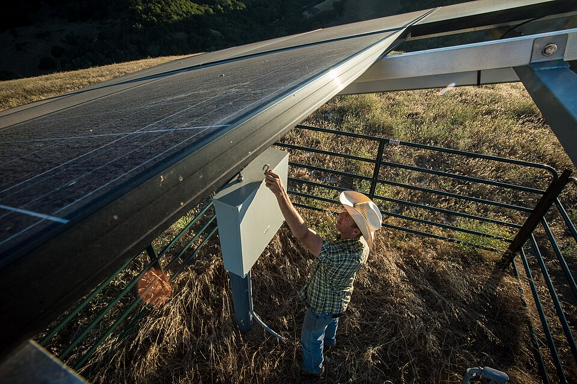

Informações e novidades sobre energia renovável, com foco em quem vive e produz no campo.
Escolha um assunto
Aqui há notícias e vídeos de outros sites, com o nome do veículo, a data e o link para o original, e textos curtos escritos pela nossa equipe. Os resumos das notícias e dos vídeos são nossos; para ver o conteúdo completo, abra o link.
Mostrando 20 informações.

Foto ilustrativa (Califórnia, EUA): Lance Cheung/USDA, 2015. Domínio público, via Wikimedia Commons.Energia solar
Sistemas de irrigação com energia solar serão utilizados para impulsionar agricultura familiar
Notícia · Canal Solar · Henrique Hein ·
Um acordo entre quatro ministérios e a Codevasf prevê usinas solares para irrigar lavouras da agricultura familiar onde a rede elétrica é fraca ou falha. A ação começou pelo Rio Grande do Norte e deve chegar a outras áreas do Norte e do Nordeste.
Mercado de energia limpa avança no campo e ajuda produtores a economizar
Notícia · Brasil 61 · Álvaro Couto ·
Com dados da Aneel, a reportagem mostra que a geração própria de energia no meio rural passou de 3,5 GW para 5,6 GW entre junho de 2023 e junho de 2025. Um especialista ouvido estima que esses sistemas se pagam em 3 a 5 anos.
MPF aponta nulidade de contratos fundiários em projetos de energia renovável
Notícia · Ministério Público Federal ·
O MPF diz que contratos de arrendamento de terras rurais para parques eólicos e solares podem ser nulos e pediu que a Aneel e o Incra fiscalizem melhor. O órgão também propôs modelos de contrato com regras mínimas para proteger as comunidades rurais.
Foto ilustrativa (Areia Branca, RN): Marcos Elias de Oliveira Júnior, 2017. CC0, via Wikimedia Commons.Energia eólica
Mário Araripe: a fortuna do senhor dos ventos vem dos territórios do semiárido
Notícia · Agência Pública · Hevilla Wanderley ·
A reportagem conta que a maioria das famílias de um assentamento em Remígio (PB) recusou propostas de arrendamento para eólicas. Antes das torres, o pagamento fica entre R$ 1 e R$ 3 por hectare ao mês, pago uma vez por ano, e os contratos podem durar até 50 anos.
Programa Produtor de Água alcança quase 1,3 mil produtores rurais e investe R$ 144,4 milhões em ações de conservação de água e solo pelo Brasil
Notícia · Agência Nacional de Águas (ANA) ·
O programa da ANA paga produtores rurais que protegem nascentes, recuperam mata ciliar e conservam o solo. Desde 2001, foram R$ 24,2 milhões pagos a 1.283 produtores em 76 projetos, com 4.180 hectares de vegetação nativa recuperados.
Foto ilustrativa (PCH Palmeiras, rio Sapucaí): MARCO AURÉLIO ESPARZ… (nome cortado na fonte), 2011. CC BY-SA 3.0, via Wikimedia Commons.Energia hidráulica
Sociedade civil se manifesta pelo fim de novas hidrelétricas na Amazônia
Notícia · ((o))eco · Júlia Mendes ·
Mais de 270 organizações e especialistas pediram uma pausa em novas grandes hidrelétricas na Amazônia. Segundo o manifesto, várias pequenas centrais (PCHs) num mesmo rio podem somar um impacto até quatro vezes maior que o de uma usina grande, porque cortam o caminho dos peixes que migram.
Carneiro hidráulico leva água com facilidade e baixo custo - Rio Grande Rural
Vídeo · Rio Grande Rural (Emater/RS-Ascar) · · 7 min 03 s
Mostra carneiros hidráulicos instalados com apoio de técnicos da Emater/RS-Ascar em Senador Salgado Filho (RS), levando água encanada a pontos que sofriam com a falta dela.
.jpg){kind=link}
_da_HostDime_Brasil.png){kind=link}

.jpg){kind=link}